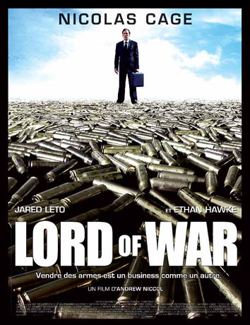
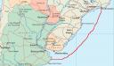

.
Recentemente houve uma Operação Policial da CORE que resultou em 16 presos e apreensão de alguns fuzis, munições, pistolas, granadas, enfim, o básico que vemos por aqui no Rio de Janeiro.
Sempre que são noticiadas apreensões de fuzis como o AK-47, HK-G3 ou o FAL aparece na Delegacia responsável um amigo da initeligência do Exército para fotografar, anotar a numeração se não estiver sido raspada, e verificar se algum armamento fora desviado das Forças Armadas (e isso acontece com frequência).
Estávamos conversando sobre um fuzil calibre 7,62mm que foi apreendido, e que ninguém por ali conhecia. Nem sabíamos em que país fora fabricado.
Ele comentou que a partir de 1999 mais ou menos passou a fazer um mapeamento com os locais de apreensão dos fuzis FAL, e no início deste século, notava-se grande volume destas armas apreendidas na região de Niterói e São Gonçalo.
Daí, passa-se a uma simples questão de raciocínio lógico: é sabido que durante a Guerra das Malvinas, que teve fim no ano de 1982, os exércitos da Argentina faziam uso maciço do fuzil FAL. Estas armas começaram a ser apreendidas pouco mais de 10 anos depois no Estado do Rio de Janeiro, nas cidades de Niterói, São Gonçalo e adjacências. São locais onde existem portos para atracamento de navios de carga...
Não precisa pensar muito para iniciarmos uma sequência de suposições: pode ser que o armamento dos exércitos argentinos, com o fim da guerra começaram a ser desviados ou mesmo vendidos oficiosamente por oficiais do exército para traficantes de armas. Pode ser que estes traficantes de armas tenham contato com traficantes de drogas no Brasil. Pode ser que a mercadoria tenha chegado em terras brasileiras através dos portos de Niterói. Pode ser que por isso a Polícia tenha começado a se deparar com frequencia com este armamento naquela região...
{kind=link}
Pode ser ? Devemos discutir mais seriamente, com a participação da sociedade civil organizada, não só a força do crime no Rio, São Paulo, Recife, Belo Horizonte, Porto Alegre... mas também a ineficiência latente do nosso patrulhamento de fronteira. O que as Forças Armadas e a Polícia Federal tem feito para tornar nosso país menos vulnerável à ação de marginais alienígenas?
No mesmo tema, lembrei-me do filme cujo título em português ficou "O Senhor das Armas" (originalmente Lord Of War) com o ator Nicolas Cage. Ele encarna um traficante de armas que movimenta milhões negociando no mercado negro de armamentos.
O filme retrata de maneira crua e realista a decadência dos exércitos de países no período pós guerra, a corrupção dos militares que aproveitam para vender tudo que podem diante do pouco controle do Estado. Diz-se que o filme é baseado em fatos reais e atuais, e conta uma mistura das histórias de diversos traficantes de armas reais. É uma crítica também ao governo Bush dos Estados Unidos, com sua corrida armamentista e lucros com venda de armas para outros países durante guerras estimuladas. Tanto que nenhuma produtora americana quis rodar o filme após ler o roteiro.
E além disso é um bom filme, com uma cena de abertura que vale mais que mil palavras. E, espia só, tem tudo a ver com a gente... ;)
[youtube n4jMzKxYB74]